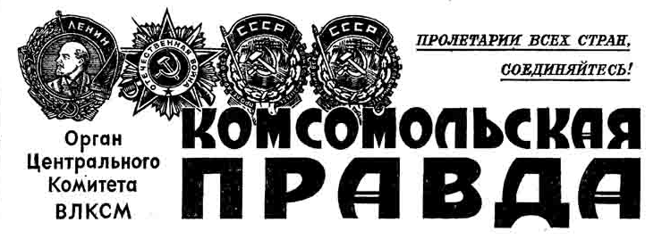

12 апреля 1961 г. в Советском Союзе
выведен на орбиту вокруг
Земли первый в мире космический ко
рабль-спутник "Восток" с человеком на борту.
Пилотом-космонавтом кос
мического корабля-спут
ника "Восток"
является гражданин Сою
за Советских Социалисти
ческих Республик летчик
майор ГАГАРИН Юрий Алексеевич.
Старт космической многосту
пенчатой ракеты прошел успеш
но, и после набора
первой космической скоро
сти и отделения от последней сту
пени ракеты-носителя
корабль-спутник начал свобод
ный полет по орбите вокруг Земли.
По предварительным данным, пе
риод обращения корабля-спут
ника вокруг Земли
составляет 89,1 минуты; мини
мальное удаление от поверхно
сти Земли (в перигее)
равно 175 километрам, а макси
мальное расстояние (в апогее) со
ставляет 302 километра; угол на
клона плоскости орбиты к эква
тору 65 градусов 4 минуты.
Вес космического корабля-спут
ника с пилотом-космонавтом со
ставляет
4.725 килограммов, без учета веса ко
нечной ступени ракеты-носителя.
С космонавтом товари
щем ГАГАРИНЫМ установлена и под
держивается
двухсторонняя радиосвязь. Ча
стоты бортовых коротковолно
вых передатчиков
составляют 9,019 мегагер
ца и 20,006 мегагерца, а в диапазо
не ультракоротких
волн 143,625 мегагерца. С помощью ра
диотелеметрической и теле
визионной
систем производится наблюде
ние за состоянием космонав
та в полете.
Период выведения кораб
ля-спутника "Восток" на орби
ту космонавт
товарищ ГАГАРИН перенес удовлетво
рительно и в настоящее время
чувствует себя хорошо. Систе
мы, обеспечивающие необхо
димые жизненные
условия в кабине корабля-спутни
ка, функционируют нормально.
Полет корабля-спутника "
Восток" с пилотом-космонав
том товарищем
ГАГАРИНЫМ на орбите продолжается.
пилот-космонавт майор
Гагарин, пролетая над Африкой,
передал с борта
космического корабля "
Восток": "Полет, протекает
нормально, состояние
невесомости переношу
хорошо".
после облета земного шара
в соответствии с заданной
программой, была включена
тормозная двигательная установка
и космический корабль-спутник
с пилотом-космонавтом
майором Гагариным начал снижать
ся с орбиты для приземления в
заданном районе Советского Союза.
После успешного проведения
намеченных исследований и
выполнения программы
полета 12 апреля 1961 года
в 10 часов 55 минут московского
времени советский
корабль "Восток" совершил
благополучную посадку в
заданном районе Советского
Союза.
Летчик-космонавт майор Гагарин
сообщил: "Прошу доложить
партии и правительству и
лично Никите Сергеевичу
Хрущеву, что приземление прошло
нормально, чувствую себя
хорошо, травм и ушибов не имею".
Осуществление полета человека
в космическое
пространство открывает
грандиозные перспективы
покорения космоса
человечеством
Великая победа разума и труда
МИР РУКОПЛЕЩЕТ ЮРИЮ ГАГАРИНУ

№88 (11028)
Цена 2 коп.
К Коммунистической партии и народам Советского Союза!
К народам и правительствам всех стран!
Ко всему прогрессивному человечеству!
ОБРАЩЕНИЕ
Центрального Коммитета КПСС, Президиума Верховного
Совета СССР и правительства Советского Союза
Свершилось великое событие.
Впервые в истории человек
осуществил полет в космос.
12 апреля 1961 года в 9 часов 7 минут по
московскому времени
космический корабль-спутник "
Восток" с человеком на борту
поднялся в
С чувством большой радости и законной
гордости Центральный Комитет
Коммунистической партии,
Президиум Верховного Совета
СССР и Советское
космос и, совершив полет вокруг
земного шара, благополучно
вернулся на
священную землю нашей Родины -
страны Советов.
Первый человек, проникший в
космос, - советский человек,
гражданин Союза
Советских Социалистических
Республик!
Это - беспримерная победа человека
над силами природы, величайшее
завоевание
науки и техники, торжество
человеческого разума.
Положено начало полетам
человека в космическое пространство.
В этом подвиге, который войдет в
века, воплощены гений советского
народа,
могучая сила социализма.
С чувством большой радости и законной
гордости Центральный Комитет
Коммунистической партии,
Президиум Верховного Совета
СССР и Советское
правительство отмечают, что эту
новую эру в прогрессивном развитии
человечества
С чувством большой радости и законной
гордости Центральный Комитет
Коммунистической партии,
Президиум Верховного Совета
СССР и Советское
открыла наша страна - страна победив
шего социализма.
В прошлом отсталая царская Россия не
могла и мечтать о свершении таких
подвигов в борьбе за прогресс, о
соревновании с более развитыми в
технико-экономическом отношении
странами.
Волею рабочего класса, волею
народа, вдохновляемых партией
коммунистов
во главе с Лениным, наша страна
превратилась в могущественную
социалистическую
державу, достигла невиданных
высот в развитии науки и техники.
Когда рабочий класс в октябре 1917 года
взял власть в свои руки, многие, даже
честные люди, сомневались в том, сможет
ли он управлять страной, сохранить хотя
бы достигнутый уровень развития
экономики, науки и техники.
И вот теперь перед всем миром рабочий класс,
советское колхозное
крестьянство, советская интеллигенция,
весь советский народ демонстрируют
небывалую победу науки и техники.
Наша страна опередила все другие
государства
С чувством большой радости и законной
гордости Центральный Комитет
Коммунистической партии,
Президиум Верховного Совета
СССР и Советское
мира и первой проложила путь в космос.
Советский Союз первым запустил
межконтинентальную
баллистическую ракету,
первым послал искусственный спутник
Земли, первым направил космический
корабль на Луну, создал первый
искусственный спутник Солнца,
осуществил
полет космического корабля
в направлении к планете Венера.
Один за другим
советские корабли-спутники с
живыми существами на борту
совершали полеты в
космос и возвращались на Землю.
Венцом наших побед в освоении
космоса явился триумфальный
полет советского
человека на космическом
корабле вокруг Земли.
Честь и слава рабочему классу,
советскому крестьянству,
советской интеллигенции,
всему советскому народу!
Честь и слава советским ученым,
инженерам и техникам -
создателям космического
корабля!
Честь и слава первому
космонавту - товарищу
Гагарину Юрию Алексеевичу
- пионеру освоения космоса!
Нам, советским людям, строящим
коммунизм, выпала честь первыми
проникнуть в космос.
Победы в освоении космоса
мы считаем не только достижением
нашего народа, но и
всего человечества. Мы с радостью
ставим их на службу всем народам, во имя
прогресса, счастья и блага всех людей на
Земле. Наши достижения и открытия
мы ставим не на службу войне, а на службу
миру и безопасности народов.
Развитие науки и техники
открывает безграничные
возможности для овладения
силами природы и использования
их на благо человека, для этого
прежде всего
надо обеспечить мир. В этот
торжественный день мы вновь
обращаемся к народам
и правительствам всех стран с призывным
словом о мире.
Пусть все люди, независимо от рас и
наций, цвета кожи, от
вероисповедания и
социальной принадлежности,
приложат все силы, чтобы
обеспечить прочный мир во
всем мире. Положим конец гонке
вооружений! Осуществим
всеобщее и полное
разоружение под строгим
международным контролем!
Это будет решающий вклад
в священное дело защиты мира.
Славная победа нашей Родины
вдохновляет всех советских
людей на новые подвиги
в строительстве коммунизма!
Вперед, к новым победам со имя мира,
прогресса и счастья человечества!
Советскому космонавту, впервые в мире совершившему космический полет
майору ГАГАРИНУ Юрию Алексеевичу
Дорогой Юрий Алексеевич!
Мне доставляет большую радость
горячо поздравить Вас с
выдающимся героическим
подвигом - первым космическим
полетом на корабле-спутнике
"Восток".
Весь советский народ восхищен
Вашим славным подвигом, который
будут помнить в
веках как пример мужества, отваги
и геройства во имя служения
человечеству.
Совершенный Вами полет
открывает новую страницу в
истории человечества в
покорении
космоса и наполняет сердца
советских людей великой
радостью и гордостью за свою
социалистическую Родину.
От всего сердца поздравляю Вас со счастливым
возвращением
из космического путешествия на
родную землю. Обнимаю Вас.
До скорой встречи в Москве.